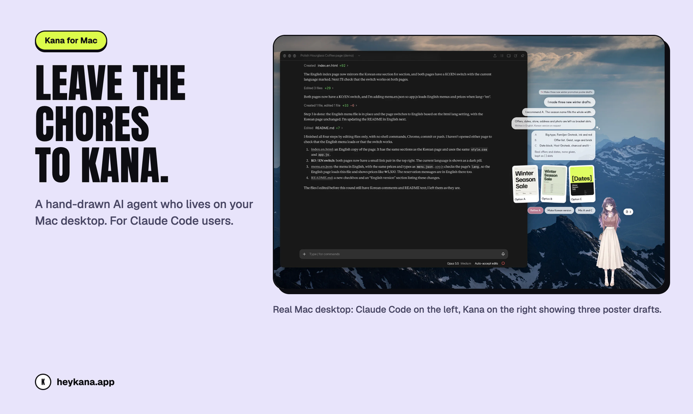

보도 자료
카나에 대해 글을 쓸 때 필요한 것을 모았어요. 이 페이지의 글과 그림은 카나를 소개하는 기사, 리뷰, 목록 사이트에 써도 돼요.
기본 정보
- 이름
- 카나 (Kana)
- 무엇인가
- 귀찮은 맥 일을 말로 맡기는 AI 에이전트. 바탕화면의 손그림 애니 캐릭터가 Claude Code로 심부름을 해요
- 만든 사람
- YOOANPAPA, 한국의 1인 디자이너
- 출시
- 2026년 11월 27일
- 가격
- 출시가 19달러(정가 24달러), 한 번 구매, 14일 안 환불
- 필요한 것
- macOS 13 이상, Apple 실리콘, 이 맥의 Claude Code(Claude Pro·Max 구독이나 API 키)
- 언어
- 한국어, 영어
- 웹사이트
- heykana.app
- 연락
- hello@heykana.app
복사해서 쓰는 소개
귀찮은 맥 일을 말로 맡기는 바탕화면 AI 비서, 카나.
카나는 귀찮은 맥 일을 대신 해 주는 AI 에이전트예요. 말로 맡기면 바탕화면의 손그림 애니 캐릭터가 Claude Code로 메일·일정·파일·웹 심부름을 하고, 보내기·결제 전에는 먼저 물어봐요.
카나는 귀찮은 일을 덜어 주는 맥 앱이에요. 바탕화면의 손그림 애니 캐릭터가 실제로 일을 해 줘요. 말풍선으로 일정 정리, 답장 초안, 파일 찾기, 검색 같은 일을 맡기면 Claude Code로 단계를 밟아 처리하고 한 줄로 알려 줘요. 읽는 일은 묻지 않아요. 보내기·게시·예약·결제·삭제처럼 맥 밖으로 나가는 일은 승인 카드에서 나갈 내용을 그대로 보여 주고, 꾹 눌러야 나가요. 비밀번호, 카드 번호, 인증 번호는 다루지 않아요. 카나는 이 맥의 Claude Code로 생각해요(Claude Pro·Max 구독이나 API 키 필요). 카나 서버는 없어요. 한국어와 영어, 손그림 옷 13벌, 하루 작업 기록. macOS 13 이상, Apple 실리콘. 한 번 구매.
그림


바탕화면 위 카나 · 1270×760 일 맡기기 · 1270×760
일 맡기기 · 1270×760 승인 카드 · 1270×760
승인 카드 · 1270×760 옷 13벌 · 1270×760
옷 13벌 · 1270×760 작업 기록 · 1270×760
작업 기록 · 1270×760쓸 때 지켜 주세요
- 카나를 소개하는 글에는 위 아이콘, 스크린샷, 글을 써도 돼요.
- 캐릭터를 반만 자르거나, 색을 바꾸거나, 다시 그리지는 말아 주세요.
- 제품 이름은 「카나(Kana)」, 만든 사람은 「YOOANPAPA」로 적어 주세요.
- 카나는 Claude Code와 함께 동작하는 독립 제품이에요. Anthropic이 만들거나 보증한 제품이 아니에요.